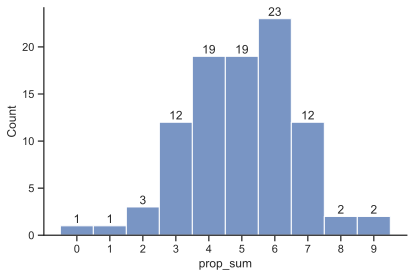

| round | treatment | proportion |
|---|---|---|
| 1 | cue | 1.000 |
| 1 | no_cue | 1.000 |
| 2 | cue | 0.917 |
| 2 | no_cue | 0.957 |
| 3 | cue | 0.958 |
| 3 | no_cue | 0.957 |
| 4 | cue | 0.917 |
| 4 | no_cue | 0.913 |
| 5 | cue | 0.958 |
| 5 | no_cue | 0.783 |
| 6 | cue | 0.958 |
| 6 | no_cue | 0.913 |
| 7 | cue | 1.000 |
| 7 | no_cue | 1.000 |
| 8 | cue | 0.958 |
| 8 | no_cue | 1.000 |
| 9 | cue | 1.000 |
| 9 | no_cue | 1.000 |
| 10 | cue | 0.958 |
| 10 | no_cue | 1.000 |
共同富裕实验数据分析 2023-06-12
1 基础数据分析
1.1 提议者的选择
1.1.1 提议者选择A的比例：按round
提议者选择A的比例
不同treatment的卡方检验
| round | Chi2 | p-value |
|---|---|---|
| 1 | 0.000 | 1.000 |
| 2 | 0.000 | 1.000 |
| 3 | 0.000 | 1.000 |
| 4 | 0.000 | 1.000 |
| 5 | 1.870 | 0.171 |
| 6 | 0.001 | 0.970 |
| 7 | 0.000 | 1.000 |
| 8 | 0.000 | 1.000 |
| 9 | 0.000 | 1.000 |
| 10 | 0.000 | 1.000 |
绘图
1.1.2 提议者选择A的比例：按pareto
| pareto | treatment | proportion |
|---|---|---|
| weak | cue | 0.958 |
| weak | no_cue | 0.978 |
| not | cue | 0.948 |
| not | no_cue | 0.891 |
| strong | cue | 0.979 |
| strong | no_cue | 1.000 |
不同treatment的卡方检验
| pareto | Chi2 | p-value |
|---|---|---|
| weak | 0.000 | 1.000 |
| not | 1.352 | 0.245 |
| strong | 0.463 | 0.496 |
1.2 回应者的选择
1.2.1 回应者选择同意的比例：按round
| round | treatment | proportion |
|---|---|---|
| 1 | cue | 0.833 |
| 1 | no_cue | 0.609 |
| 2 | cue | 0.833 |
| 2 | no_cue | 0.609 |
| 3 | cue | 0.458 |
| 3 | no_cue | 0.435 |
| 4 | cue | 0.500 |
| 4 | no_cue | 0.696 |
| 5 | cue | 0.417 |
| 5 | no_cue | 0.478 |
| 6 | cue | 0.333 |
| 6 | no_cue | 0.478 |
| 7 | cue | 0.917 |
| 7 | no_cue | 1.000 |
| 8 | cue | 0.875 |
| 8 | no_cue | 0.870 |
| 9 | cue | 1.000 |
| 9 | no_cue | 1.000 |
| 10 | cue | 0.917 |
| 10 | no_cue | 0.913 |
不同treatment的卡方检验
| round | Chi2 | p-value |
|---|---|---|
| 1 | 1.946 | 0.163 |
| 2 | 1.946 | 0.163 |
| 3 | 0.000 | 1.000 |
| 4 | 1.143 | 0.285 |
| 5 | 0.017 | 0.896 |
| 6 | 0.511 | 0.475 |
| 7 | 0.479 | 0.489 |
| 8 | 0.000 | 1.000 |
| 9 | 0.000 | 1.000 |
| 10 | 0.000 | 1.000 |
绘图
1.2.2 回应者选择同意的比例：按帕累托
| pareto | treatment | proportion |
|---|---|---|
| weak | cue | 0.833 |
| weak | no_cue | 0.609 |
| not | cue | 0.427 |
| not | no_cue | 0.522 |
| strong | cue | 0.927 |
| strong | no_cue | 0.946 |
不同treatment的卡方检验
| pareto | Chi2 | p-value |
|---|---|---|
| weak | 4.854 | 0.028 |
| not | 1.330 | 0.249 |
| strong | 0.049 | 0.824 |
绘图
1.3 一致同意
一致同意：提议者选择A，且回应者选择同意。
1.3.1 一致同意的比例：按round
| round | treatment | proportion |
|---|---|---|
| 1 | cue | 0.833 |
| 1 | no_cue | 0.609 |
| 2 | cue | 0.833 |
| 2 | no_cue | 0.652 |
| 3 | cue | 0.500 |
| 3 | no_cue | 0.478 |
| 4 | cue | 0.500 |
| 4 | no_cue | 0.609 |
| 5 | cue | 0.375 |
| 5 | no_cue | 0.522 |
| 6 | cue | 0.292 |
| 6 | no_cue | 0.391 |
| 7 | cue | 0.917 |
| 7 | no_cue | 1.000 |
| 8 | cue | 0.917 |
| 8 | no_cue | 0.870 |
| 9 | cue | 1.000 |
| 9 | no_cue | 1.000 |
| 10 | cue | 0.958 |
| 10 | no_cue | 0.913 |
不同treatment的卡方检验
| round | Chi2 | p-value |
|---|---|---|
| 1 | 4.854 | 0.028 |
| 2 | 3.158 | 0.076 |
| 3 | 0.000 | 0.996 |
| 4 | 0.726 | 0.394 |
| 5 | 1.496 | 0.221 |
| 6 | 0.642 | 0.423 |
| 7 | 2.220 | 0.136 |
| 8 | 0.165 | 0.685 |
| 9 | 0.000 | 1.000 |
| 10 | 0.226 | 0.634 |
绘图
1.3.2 一致同意的比例：按帕累托
| pareto | treatment | proportion |
|---|---|---|
| weak | cue | 0.833 |
| weak | no_cue | 0.630 |
| not | cue | 0.417 |
| not | no_cue | 0.500 |
| strong | cue | 0.948 |
| strong | no_cue | 0.946 |
不同treatment的卡方检验
| pareto | Chi2 | p-value |
|---|---|---|
| weak | 8.895 | 0.003 |
| not | 2.304 | 0.129 |
| strong | 0.000 | 1.000 |
绘图
1.4 实现的效率
效率：提议者和回应者的赢利之和，占理论最大总赢利的比例
1.4.1 实现的效率：按round
匹配双方的赢利之和，在不同round和treamtment下的均值，及其占理论最大赢利的比例
| round | treatment | total_profit | max_profit | total_profit% |
|---|---|---|---|---|
| 1 | cue | 261.458 | 300 | 0.872 |
| 1 | no_cue | 249.265 | 300 | 0.831 |
| 2 | cue | 333.458 | 400 | 0.834 |
| 2 | no_cue | 301.522 | 400 | 0.754 |
| 3 | cue | 239.583 | 300 | 0.799 |
| 3 | no_cue | 235.174 | 300 | 0.784 |
| 4 | cue | 276.250 | 400 | 0.691 |
| 4 | no_cue | 283.000 | 400 | 0.708 |
| 5 | cue | 223.750 | 300 | 0.746 |
| 5 | no_cue | 226.696 | 300 | 0.756 |
| 6 | cue | 239.575 | 400 | 0.599 |
| 6 | no_cue | 251.696 | 400 | 0.629 |
| 7 | cue | 283.708 | 300 | 0.946 |
| 7 | no_cue | 292.696 | 300 | 0.976 |
| 8 | cue | 365.333 | 400 | 0.913 |
| 8 | no_cue | 351.000 | 400 | 0.878 |
| 9 | cue | 297.042 | 300 | 0.990 |
| 9 | no_cue | 297.348 | 300 | 0.991 |
| 10 | cue | 378.708 | 400 | 0.947 |
| 10 | no_cue | 373.870 | 400 | 0.935 |
对比不同treatment的t检验
| round | t_stat | p_value | num_cue | num_no_cue |
|---|---|---|---|---|
| 1 | 1.016 | 0.315 | 24 | 23 |
| 2 | 1.480 | 0.146 | 24 | 23 |
| 3 | 0.360 | 0.720 | 24 | 23 |
| 4 | -0.288 | 0.774 | 24 | 23 |
| 5 | -0.291 | 0.772 | 24 | 23 |
| 6 | -0.607 | 0.547 | 24 | 23 |
| 7 | -1.435 | 0.158 | 24 | 23 |
| 8 | 0.814 | 0.420 | 24 | 23 |
| 9 | -0.252 | 0.802 | 24 | 23 |
| 10 | 0.333 | 0.741 | 24 | 23 |
绘图
1.4.2 实现的效率：按帕累托
注：在每一种帕累托情形下，包括了不同的理论最大赢利的情况，因此采用绝对量可能没有意义，这里只保留了占比。同样，t检验也是针对比例进行的。
| pareto | treatment | total_profit% |
|---|---|---|
| weak | cue | 0.853 |
| weak | no_cue | 0.792 |
| not | cue | 0.709 |
| not | no_cue | 0.719 |
| strong | cue | 0.949 |
| strong | no_cue | 0.945 |
绘图
1.5 开心满意
happy值是从1到10的整数，越大表示越开心。
1.5.1 作为提议者的次数和比例
任何一位参与人，10轮实验中作为提议者的次数的分布

1.5.2 happy的treatment比较
不同treatment的happy均值
| treatment | happy | prop_rate | prop_sum |
|---|---|---|---|
| cue | 6.333 | 0.5 | 5.0 |
| no_cue | 6.804 | 0.5 | 5.0 |
prop_status: 一位被试在10轮中成为提议者的频率：小于、等于、大于0.5。
各个分类的happy均值
| treatment | prop_status | happy |
|---|---|---|
| cue | less | 6.647 |
| no_cue | less | 6.632 |
| cue | equ | 6.222 |
| no_cue | equ | 6.400 |
| cue | more | 6.136 |
| no_cue | more | 7.235 |
不同treatment的t检验
| t_stat | p_value |
|---|---|
| -1.202 | 0.232 |
按prop_status分组后，不同treatment的t检验
| prop_status | t_stat | p_value | num_cue | num_no_cue |
|---|---|---|---|---|
| less | 0.024 | 0.981 | 17 | 19 |
| equ | -0.168 | 0.868 | 9 | 10 |
| more | -2.033 | 0.049 | 22 | 17 |
绘图